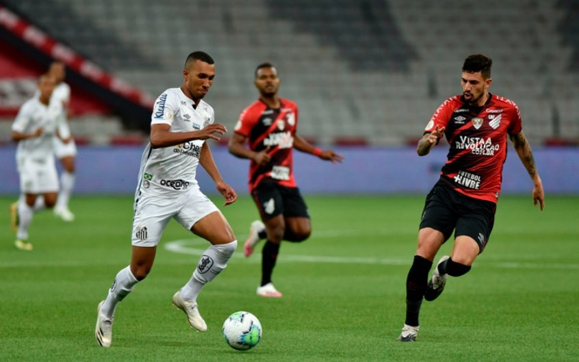

Santos vence Athetico e se afasta da zona de rebaixamento
O jogador acaba de anunciar o fechamento do contrato com o time pernanbucano e se despede de Paris.
Depois de rodadas na zona de rebaixamento, o Santos respira e busca uma vaga para as competições internacionais. No início da noite de sábado (30), os comandados de Carille venceram o Athletico por 1 a 0, pela 29ª rodada, e se afastaram do pelotão posicionado na zona mais inferior da tabela
A vitória santista foi construída aos 4 minutos do segundo tempo, com Madson. O lateral recebeu passe de Marinho, superou a defesa athleticana e cabeceou no canto esquerdo.
O resultado leva o Santos aos 35 pontos, cinco pontos a frente do Juventude, primeiro time na zona de rebaixamento, em décimo sétimo. Os paranaenses ainda podem ser superados pelo São Paulo na rodada.
O Santos agora se prepara para o clássico. O time de Carille enfrenta o Palmeiras no próximo domingo (7), às 16h (de Brasília). Já o Athletico recebe o Flamengo na próxima terça-feira (2), em jogo atrasado da quarta rodada do Brasileirão.
Saiba Mais :

Laura Pigossi vence favorita e é campeã em Guayaquil
Medalhista de bronze em duplas na Olimpíada de Tóquio ao lado de Luisa Stefani, tenista brasileira deve entrar para top 250 do mundo